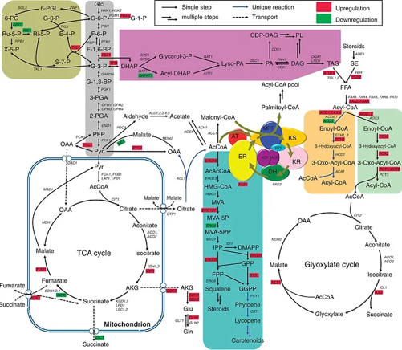
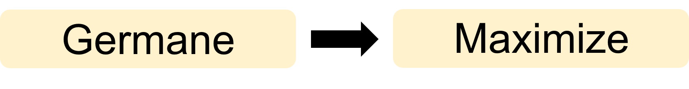
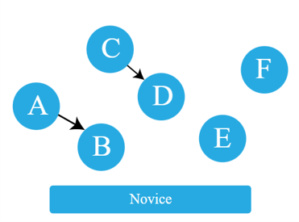
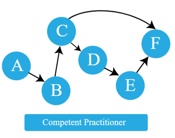
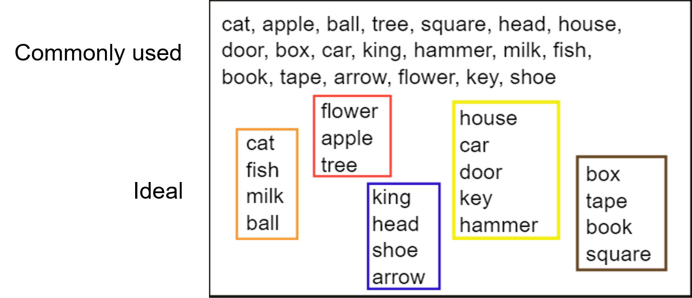

Designing courses that minimize cognitive overload in learners
Overall Goal
- To outline a methodology for designing courses that minimize cognitive overload in learners
Outline
Part I: Theories of Memory Processing and Learning
- Information Processing Theory
- Cognitive Load Theory
Part II: Cognitive Load Theory and Course Design
- Identify Learner Personas / Types
- Mental Models
- Formative Assessments
- Improving Course Content and Delivery
Learning Objectives
- Describe the main types of cognitive load and the limits of human memory.
- Explain the differences between various learner types / personas.
- Define mental models and create concept maps.
- Create formative assessments that diagnose flawed mental models.
Part I: Theories of Memory Processing and Learning
Example: Prof. X’s Biochemistry 101 Lecture (A)

Example: Prof. X’s Biochemistry 101 Lecture (B)

Information Processing Theory and Cognitive Load
1. Information Processing Theory
- A framework for understanding how information is encoded into memory

2. Cognitive Load
- Available amount of information that the working / short-term memory can hold at a specific time (7 +/- 2 chunks of info at a time)

3. Cognitive Load Theory
Describes how the human mind processes new information
3 Main Types of Cognitive Load


3. Cognitive Load Theory
Intrinsic
Innate difficulty of a task and complexity of new information.
Influenced by age and/or educational background.
3. Cognitive Load Theory
Extraneous
Load due to poorly designed instructional material.
Distracts working memory from processing the required information.
3. Cognitive Load Theory
Extraneous
- Examples

3. Cognitive Load Theory
Germane
Mental capacity used to integrate new information with existing knowledge
Effort required to learn and retain the material
Influenced by level of training (Math Professor vs 1st grader)
3. Cognitive Load Theory
Summary



Formative Assessment
- Link to be provided
Extra credit: Short test of working memory
Try during the break: https://miku.github.io/activememory/
5 minute break
Part II: Cognitive Load Theory and Course Design
1. Identify Learner Personas / Types
- Learners can be distinguished by the mental models they use to solve problem.

2. Mental models
- “A simplified representation of the most important parts of some problem domain that is good enough to enable problem solving.”

Limitations
- Simplified representation.
- Atoms are not balls
- Sticks are not bonds.
2. Mental models



2. Mental models

3. Formative Assessments
Help to identify common misconceptions and broken mental models.
Factual errors: The Capital City of Sweden is Doha.
Broken models: Motion and acceleration must always be in the same direction.
Fundamental beliefs: Some people are computational and others are not.
3. Formative Assessments
Example

Each incorrect answer has diagnostic power and will guide correction
3. Formative Assessments
Memory management

4. Improving course content and delivery
Chunking

4. Improving course content and delivery
Reduce split-attention effect


4. Improving course content and delivery
Encourage the use of concept maps
Example Discussion: Renewable and Non-renewable Energy Sources

4. Improving course content and delivery
- Go slow and repeat if necessary
- Be aware of expert blind spots
- Use authentic tasks and examples to teach
- Give and receive appropriate feedback
Conclusions
- Cognitive load and working / short-term memory have a significant impact on learning outcomes.
- Knowledge of learner types and personas and the mental models they use is critical for effective teaching.
- Formative assessments should be incorporated into lessons to identify misconceptions and receive teaching feedback.
References

References
- https://monicanasseri.wixsite.com/biochemical-pathways/biochemical-pathways
- Atkinson and Shiffrin (1968) Psychology of Learning and Motivation (2) 89-195
- https://www.simplypsychology.org/multi-store.html
- Sweller, J. (1998) Cognitive Science 12(2): 257-285
- https://mcdreeamiemusings.com/blog/2019/10/15/the-good-the-bad-and-the-can-be-ugly-the-three-parts-of-cognitive-load
References
- https://carpentries.github.io/instructor-training/
- Benner P. (2004) Bulletin of Science, Technology & Society, 24(3), 188–199
- https://commoncog.com/teaching-tech-together/
- https://education.riaus.org.au/a-better-way-to-see-molecules
- https://www.mindtools.com/aqxwcpa/cognitive-load-theory
- https://visme.co/blog/how-to-make-a-concept-map/
Discussion Questions
- Where have you identified “expert blind spots” in your own teaching?
- How can you reduce cognitive overload in the subjects that you teach?
- Based on what you have learnt, how will you structure your courses differently?